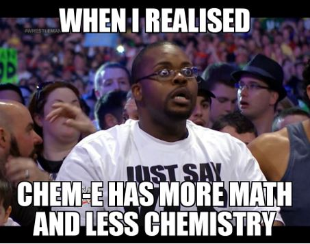
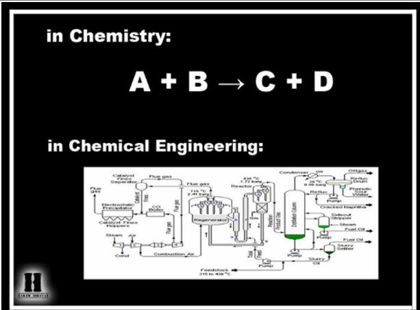
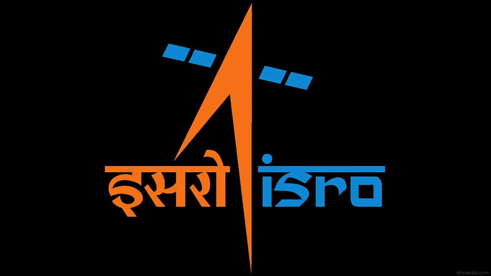
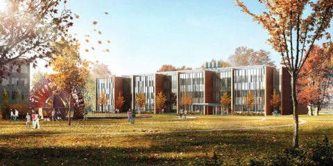
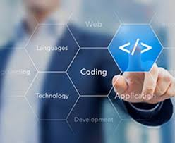

FINANCE
Do you think you should explore outside engineering?
Then our institute is probably the best place to discover yourself and give yourself an opportunity to figure what exactly you want to do in life!
Finance is one thing you should explore. Being a prospective and growing sector it has immense potential in the market.
Finance is one of the most growing and prospective sector in the economy today.
Being an engineer, we, being IITians can contribute to it better by giving it a more
technical aspect too.
The best thing about us is that we provide the right ecosystem, necessary
background, required guidance and loads of opportunities in this field! And the icing
on the cake is the Finance Club. Opportunities for related internships, elective
courses in finance and access to a well-established alumni network make sure that
your path to success in finance is smooth and clear.
Successful alumni from our institute have revealed their mantras and how our
institute helped them grow in the direction they wanted to and provided them with a
suitable platform.
“Think about what you really want to do!” This, most of us say, without
understanding that you (a 4th/5th year) know little about what people in these
sectors ‘actually’ do. It becomes your responsibility to try and understand what
constitutes a typical day at office in each of these sectors. It’s not right to decide
what you want to do unless you know what’s being done in there. Hence, a good
amount of time must be spent in your conversation with seniors trying to understand
the nature of work. The set-up of IIT-M has this unique advantage of having such
talented and ambitious people in plenty. Nomura has hired students for Global
Markets (my team is a part of this division) and Risk Management roles from IIT
Madras in the past.
“I had done finance projects which were actually relevant in the real world finance.
There were other things like Principal component analysis and a couple of Machine
learning courses, which worked out well. In the HR round, they just try to understand
if you are more of a fit for the company. There’s no formula to crack the HR round.
They basically want to know how enthusiastic you are about Finance.“
Says Akshay Govindaraj,
Chemical Engineering
HSBC, Finance
“I was part of QMS (Quality Management Services), Analytics in Shaastra and I was
the Inter IIT Sports Meet's Sponsorship Core as well. Honestly, I was an introvert
before I came to the institute. I was very shy and kept my ideas to myself but after I
got into institute I made a lot of new friends of varied culture and different
backgrounds and it just made me more open towards everything. Then I saw people
working so much for Shaastra and Saarang and I also wanted to be a part of it. Once
you get into the team, it helps you grow a lot. Overall personality development which
happened because of all this was an amazing experience and AB InBev looks
especially for such leadership qualities. I had led a team of 15 people and we did
discuss that POR during my interview.”
Says Gaurav Singhvi
Chemical Engineering
Anheuser-Busch InBev, Finance
There’s tremendous amount of activity happening in IITM all the time starting from
fests to Inter; Intra hostel events (list would only be incomplete if I don’t mention
elections!). Success at IITM depends on how well you utilize these opportunities.
Proving your mettle in any of these platforms (can be anything!) is a good selling
point in your interviews!
Says Ravi Teja “Saruku” Kanneganti,
Dual Degree in Civil Engineering,
Finance, Nomura
The full articles and more content about life at IIT Madras can be found at the
Student-Alumni Blog of IIT Madras-
here.
Position Of Responsibility (PoRs)
IIT Madras is not just an institute for academic excellence. Students here are trained to be
better people by getting exposed to various aspects of life and PoRs(position of responsibility)
play a significant role in this. Almost all the activities are student run in insti (The IIT-M lingo which means Institute). From routine hostel affairs to big-budget cultural(Saarang) and technical festivals (Shaastra), student teams are the work bearers. Various PoRs are taken up with enthusiasm and life-long memories are created here.
PoRs not only keep you engaged but also help you discover new skills and hone them.They can help in personality building and on the career front too.One of the greatest opportunities offered by PoRs is freedom to implement your ideas and witness their success. Afterall, what else can beat the joy of witnessing implementation of your own brainchild and see it work! When chosen wisely, PoRs can definitely enrich your stay at IIT Madras!
Here’s what our alumni, who have been there and done that, have to say about it…
“Honestly, I was an introvert before I came to the institute. I was very shy and kept my ideas to myself but after I got into institute I made a lot of new friends of varied culture and different backgrounds and it just made me more open towards everything.Then I saw people working so much for Shaastra and Saarang and I also wanted to be a part of it. I had led a team of 15 people. Once you get into the team, it helps you grow a lot. Overall personalitydevelopment which happened because of all this was an amazing experience.”
-Gaurav Singhvi, Chemical Engineering,
Ab Inbev.
“Every responsibility involves a few conventional things that need to be done and having done them, the institute is your oyster, and you can bring into play as many new ideas as you want to”.
-Sreeharsha Gunda, Biological Engineering Global IT Leadership
Programme of Astrazeneca.
As he further told, the qualities he had learned in his PoR’s have shaped his ability to get along well with his colleagues in Astrazeneca. When he was heading the Saarang hospitality team, the 2015 Chennai floods occurred. Catastrophe struck for the hospitality team as no one believed that IIT Madras was safe to come to for Saarang. He said it was one of the most stressful periods in his insti life and taught him a lot in terms of efficiency, practical thinking and how to solve problems in emergency situations.
“Our institute has always provided us with ample opportunities to grow personally and
professionally. Personally speaking, it were the competitions that made me think differently, Ilearnt to deliver competently in a position of responsibility..”.
- Sanchit Pandey Core Member of CFI,
General Secretary of Narmada Hostel,
Winner of Honda ‘Young Engineer and Scientist’ Award 2010.
“If you asked me to pick one year out of my 5 years on campus for the experiences,
the fun, or the responsibility I’ve enjoyed then I would pick my 5th year when I was Student’s General Secretary... it helped me build the required people skills, my confidence levels, and a general larger outlook and vision that is necessary for a work environment.”
- Aditya Bharadwaj,
Electrical Engineering,
Auctus Advisors.
“PORs shape you, make you a better person...When taking up PORs it’s always good
to go to next level by outperforming in your level...Teams in our campus are model of the corporate world...It opens lots of opportunities.”
- Ramya Madhuri,
CivilEngineering,
EXL Services.
“Through my PORs (Positions of Responsibilities) I learnt how to talk to people and get work done. I learnt crisis management, work delegation and how to take the responsibility if things go wrong. They actually helped me in interviews where improvisation is more important than preparation and my PORs taught me this improvisation.[SIC] "
Mr. Srijith Rajagopalan,
Chemical Engineering,
Finance Analyst (Risk Management) Goldman Sachs.
The full articles and more content about life at IIT Madras can be found at the
Student-Alumni Blog of IIT Madras-
here.
Chemical Engineering
Have you ever thought about taking chemical engineering (ChemE) as your major?
Probably you think it’s chemistry (No, it's not!) , and have dropped the idea of
majoring in ChemE because of that. Or probably, you have not given it a thought
because you are thinking about cooler subjects like CS (high paying, top rankers’
choice :) ), elec, or mech(ah, the fascination with H.C.Verma’s monkeys and in
general, mechanics).

But over the next few minutes, this article will tell you something about ChemE@IITM and about what our profs and alumni think about insti(as our institute is called in insti lingo(an infinite loop ;)).
What is Chemical Engineering?
Chemical engineering is a field which traditionally deals with how a chemical plant operates. The reactions that are performed in a lab have to be scaled up to an industrial level to produce chemicals in large quantities and this is where chemical engineers come into picture. However, today chemical engineering is not limited to chemical industries alone. It covers a wide range of areas like biotechnology, catalysis, pollution control, renewable energy such as solar energy, drug delivery, process control and systems engineering, microelectronics, polymers, surfactants, systems and computational biology, reactor designing, heat and mass transfer and many more.

Why ChemE@IIT-M
Prof Pushpavanam, one of the senior most professors at IIT-M has talked about chemical engineering and its future with us, and here is what he has to say about it-
“Chemical engineering is one of the most broad-based and interdisciplinary fields. You could work in virtually any industry (like Professor Nagarajan who worked at IBM making semiconductors), whether it is programming, biology, or even economics; a flexibility which is not easily available in other disciplines. The field has always had a very good future.”
He also adds-
“I would tell students that a craze for certain departments is not needed; the purpose of a B.Tech is simply to give you confidence to work in your careers later. For example, I once met a parent who had studied Aerospace Engineering, and is now working at a waste-water treatment plant. It teaches you how to tackle a particular problem and analyse the given situation. No need to spend a lot of time unnecessarily worrying about future scope, there is plenty of it.”
Another of our alumni, Dr. Ganesh Kaundinya(1987) told about the future of ChemE that-
“While Energy continues to be a major global need, ChemE graduates are finding themselves at the interface of better utilization of classicals sources of energy and creating novel renewable energies. Furthermore, ChemE’s play a major role in bioengineering as the human body is a fantastic “machine” waiting to be understood. This understanding has several real applications – artificial organs, mechanical body parts, curing diseases etc. Lastly Nano engineering and materials science is yet another application of principles of chemE. Ofcourse, computer aided solutions (including artificial intelligence, programming etc) are becoming integral to all parts of engineering especially ChemE”
As told by Prof. Pushpavanam and Dr.Ganesh Kaundinya, there are many avenues for research in ChemE. You can work in diverse fields and with the flexibility in curriculum that IIT-M provides, you can always try out courses in other branches too! We have alumni who have performed exceptionally well in research around the world. There are quite a few who have done post graduation from top universities across the globe.
Along with such wide areas of research, ChemE@IIT-M is known to have students who show keen interest in core(related to your majors) as well as non-core(not related to your majors) companies right after graduation. For nurturing students with such wide range of interests, IIT-M provides a perfect environment. Let us hear what some of our recently graduated students have to say-
“IITM gives the opportunity for students to involve themselves in a variety of things apart from academics. I was part of some startups and I was also part of the Core team at Saarang(our cultural fest), I had a chance to be a part of the first batch of MITACS(scholarship for internship and post graduation in Canada) and had participated in a bunch of tech contests. All of these gave me exposure to solve a variety of problems which came in handy during the interview (and later in my job). I think people who have had diverse exposure tend to do well in the case interviews.
The two biggest skills which helped me were the diverse problem solving I had done at IITM and the interpersonal skills I had picked up from various contests and Saarang.”
-Kaushik Anand, ChemE(2010),
IITM,
Got placed in McKinsey,
one of the top corporates in the world.
“I think the biggest thing I learnt while at IIT Madras was to manage various other responsibilities along with a healthy focus on academics which is a skill that offers me a great advantage in my job every single day. I had the opportunity to be a part of various teams at insti like Saarang core committee as PR & Media Core, Placement Coordinator, Hostel literary secretary, EML Coordinator to mention a few. While the academics here impart rational thought and analytical skills, these extracurricular experiences taught me multiple stakeholder management and working in teams.”
- Sushmitha Nannuru,
ChemE(2012),
IITM,
Got placed in HUL,
a top corporate in India.
Hence, for a person not sure of his interests (definition of an average JEE aspirant), ChemE@IIT-M is an excellent option.
The full articles and more content about life at IIT Madras can be found at the
Student-Alumni Blog of IIT Madras-
here.
Stanford
Stanford, is perhaps a name which is unequivocally accepted as a standard of paramount excellence.
Anyone related to the world of academics,research or technology would want to be there, whatever maybe the field. To be fair , it’s an University powerful enough to make people interested in academics just to be there. And if your at IITM and you have decided to set your sets higher, while horizon might be very far, Stanford must be very much within your line of vision.
Having said that, there other great universities to work towards (albeit a mere handful).Another great question is , well that’s all wonederful, but is it worth it?Most importantly how does campus life lead you to it?
What needs to be said is what its like to study there and how you could get there. The people who could tell you what its really like are the Alumni of IITM who are studying in Stanford ,or better yet working there.
Fortunately that’s exactly what Chennai36 is bringing to you. Knock yourself out
“After applying, it was a very tough choice to decide on one of them(grad schools). I got an offer from Princeton University, UC Berkeley, Cornell, Stanford, and some others. Out of these, Stanford stood out, because of the entrepreneurial attitude among its students. I visited the Stanford campus before and it was quite interesting to see how the departments work there and how the projects are done. Generally, PhD is an open degree. You have to work on your own, and then, the professor decides whether it is quite a good amount of work and enough to get it written up as a dissertation. But, at Stanford, it is not like that. They have a compulsory limit that at least 3 publications would be required for a student to graduate. That was one of the most important and interesting factors. I mentioned I was into start-ups right? At Stanford University, we see even professors being involved in start-ups. So, that was a big pointer for me.”
-Abhinav Parakh is an alumnus of the batch of 2017,
Department of Chemical Engineering,
now a PhD scholar at Stanford University in Material Science and Engineering.
"I nearly went to ETH Zurich because that was the first offer I received and frankly, a fabulous one. (In fact the first thing I did after received this admit letter was to decline my placement job offer.) I also got into UCLA but I ultimately picked Stanford because of its interdisciplinary emphasis on research and the richness of its economic and polisci programs."
Karthik Rajkumar,
BTech, Electrical Engineering, 2013.
Currently doing an MS in statistics at Stanford University
with an intention to do a PhD in economics immediately after.
“My research is on shock driven instabilities and turbulence in fluid flows. To give you an idea of a typical day, let me describe my day yesterday. I went to a starbucks at 9:30 to get coffee (that was paid for by my housing community!) and I got to lab at around 10 am and spent about 15 minutes checking email and stuff. Then I worked for about an hour and a half before I had to work on a class project. For that, I had to go to another lab to use some equipment. Did that for about 4 hours. Then, got a quick bite to eat and came back to my lab and worked for another hour.
After that, I went to a friend’s place to play some music with my band for a couple of hours. At 8 pm, I went to the observatory to TA for an astronomy class. Came back home at around 11 pm and went to bed.”
Akshay Subramaniam,
second year of MS+PhD in Aeronautics and Astronautics at Stanford University.
”I mentioned earlier that I went for a research intern and that was in the Computer Science Department. And, I chose Computer Science department because, in the past 2 years( my first and second year), I did a lot of projects which involved coding and I was also part of the Institute WebOps team. During that intern, I met a professor at the University of Chicago. His team was working on a project on nanotechnology. I spent a day with them, and it was quite amazing! How they worked and how it impacts society and it caught my interest. So, when I came back, I took up a minor in Nanoscience and Nanotechnology. And that was the way to go forward.”
-Abhinav Parakh, on how insti life builds you
The full articles and more content about life at IIT Madras can be found at the
Student-Alumni Blog of IIT Madras-
here.
Electrical Engineering
 IITM offers both B.Tech. and Dual Degree in Electrical Engineering. It is one of the oldest departments at IITM.Taking the basics from the basic resistor, battery circuit we first made, the Electrical Engineering course develops and gets you to develop everything from the microprocessor in your computers to the huge electrical machines that are used in factories. It is regarded by students as one of the toughest Engineering courses but the fruits of your labour will be high as the placement of this course is only bettered by the Computer Science and Engineering course.Electrical and Electronics is where things are "happening". With advancement in the IoT field, the field of electrical engineering is now an integral part in most other fields. Electronics in shoes, in mirrors, almost everywhere.
IITM offers both B.Tech. and Dual Degree in Electrical Engineering. It is one of the oldest departments at IITM.Taking the basics from the basic resistor, battery circuit we first made, the Electrical Engineering course develops and gets you to develop everything from the microprocessor in your computers to the huge electrical machines that are used in factories. It is regarded by students as one of the toughest Engineering courses but the fruits of your labour will be high as the placement of this course is only bettered by the Computer Science and Engineering course.Electrical and Electronics is where things are "happening". With advancement in the IoT field, the field of electrical engineering is now an integral part in most other fields. Electronics in shoes, in mirrors, almost everywhere.
 If you have a passion for electronics and weren't able to get the branch of your choice,don’t worry, there are options still. Electives you could take up in 3rd or 4th years even if you are not part of the course. Another great option for the hardcore electronics enthusiasts is the Electronics Club which is part of CFI (Center For Innovation) so you can play with an Arduino or Raspberry Pi in your freetime. Envisage is another club in CFI where using programming and Electronics you get to use technology for entertainment.
If you have a passion for electronics and weren't able to get the branch of your choice,don’t worry, there are options still. Electives you could take up in 3rd or 4th years even if you are not part of the course. Another great option for the hardcore electronics enthusiasts is the Electronics Club which is part of CFI (Center For Innovation) so you can play with an Arduino or Raspberry Pi in your freetime. Envisage is another club in CFI where using programming and Electronics you get to use technology for entertainment.

Not including the major Tech giants like Samsung, Intel that recruit students through campus placement, ISRO also recruits Electrical Engineers from IITM.
For pursuing higher studies after this, there are a lot of options.The fields which are usually taken up include signals processing,analog & RF, Power Systems and Photonics. Students may also choose to specialise in Applied Mathematics, Mechatronics, Machine Learning and Computer Vision giving them a versatility not available in most other courses. Students regularly get admitted into universities like Stanford, UCB, Harvard, Georgia Tech and University of Michigan.
“So here I had classes on things like communication networks and electrical power in transmission and distribution networks, etc. and that gave me a background. I’ll have to say that once you have taken those kinds of classes, the way that makes you think has analytically shaped my life following that. ”
Noshir Contractor,Electrical Engineering
Jane S. & William J. Professor of Behavioral Sciences at the Northwestern
University, USA
“The telecom sector is an innovative and rapidly growing industry. ”
Avinash ‘Expiry’ Abhishek,
Electrical EngineeringVodafone.
“Being in one of the most challenging branch in institute, my first year was pretty rough. I knew that I was going to study with the top brains in the country but it didn’t sink in until I went through my first semester. It was getting more challenging that it was in school, this realization sunk in during first year. I was staying away from home, being responsible and independent was where the transition happened. Second year onward, things were much better. We started getting into branch subjects and fortunately I followed what I liked.”
Dr. Anand Raghunathan, Electrical Engineering
Professor in the School of Electrical and Computer Engineering at Purdue University.
“Given the internet and tech boom was after I graduated, I couldn’t have envisioned going into these domains when I was at IIT, but I think many of those foundations were laid here because of Engineering as a discipline, having the opportunity to do the kinds of projects that I did here – when I look back at it, I could say that when I was doing Engineering I was also doing problem solving with the potential to build things that had societal impact. ”
Dr. Ramayya Krishnan, Mechanical Engineering
Dean of the Heinz College of Information Systems and
Public Policy and Professor of Management Science and Information Systems at Carnegie Mellon University.
The full articles and more content about life at IIT Madras can be found at the
Student-Alumni Blog of IIT Madras-
here.
Purdue
 IIT Madras, the best ranked technical institute in the country, is a temple of engineering and research. Our students have gone on to pursue higher studies in various disciplines in top-ranking institutions across the world. Stanford, Harvard, MIT, Oxford, and Purdue are some hotspots. Most students say that their time in the institute has shaped them and served as an ideal springboard from which they have launched themselves.
IIT Madras, the best ranked technical institute in the country, is a temple of engineering and research. Our students have gone on to pursue higher studies in various disciplines in top-ranking institutions across the world. Stanford, Harvard, MIT, Oxford, and Purdue are some hotspots. Most students say that their time in the institute has shaped them and served as an ideal springboard from which they have launched themselves.
Purdue University is located in a small city, West Lafayette, along the banks of the Wabash river. It is set in a picturesque location and is a nature-lover’s haven. Many of us would have seen the Purdue fountain as the first image on Google whenever we search for Purdue! First impressions of our alumni has been that the atmosphere there is “extravagant and friendly”. Students generally join a Ph.D programme as general scholars, or do their masters(M.S.).

When they decide
Most scholars have decided that they want to study there by the 3rd year of their undergrad course. Most of their 3rd year internships have been research internships. But there are always those who know right from high school, and those who made a last-minute call! The Institute gives ample opportunities to find your calling in terms of credited undergraduate projects, B. Tech projects, Career guidance sessions by qualified professionals and access to the alumni network in these universities.
What is required?
Purdue looks for commitment in the student to work in a research field for at least 4 years. They expect you to be dedicated to the academic system and possess the intellectual capacity to contribute to the field. They look for an ability to progress. SOPs( Statement of Purpose) are very important and one must give adequate time and thought to them. The rich alumni base of IIT-M is a source of guidance here. Students are mapped with alumni mentors from the universities of their choice. These mentors guide students in the entire process of application including guidance on research internships, projects, papers publications and SOPs. The illustrious faculty of IIT-M is another source of guidance and students work on research projects with them which gives them the much needed research experience and great reccomendation letters.
Life at Purdue
Most students are not forced to follow a strict schedule and are permitted to go to their labs at any point of time and work, as long as they complete their work! The same fact is echoed by the words of Alekhya Reddy; “...there is no fixed schedule as such. We can come and go whenever we want. We’ve been given a key to the department.”
“I am a computational scholar in Purdue so I can work either from home or from office. But I prefer to work from the office. I generally go to the campus around 10 am in the morning and work there for a few hours. I come to lunch and then work some more until late night.”
Tony Mathew(BT/CH‘16) Ph.D Purdue
"Normally, I go in the morning by around 9 or 10 and I come back by 4 or 5. Another thing here is that you have to cook food on your own as it can get a bit overwhelming to eat outside every day. This was something completely new and for the first time I was actually missing mess food! Aloo is the simplest thing to cook and frozen stuff like chicken nuggets, which you just have to heat, are some common things which I eat. You also get readymade chapattis. The fruits here are also pretty good. There are lots of places to eat outside, but it becomes too overwhelming sometimes to eat outside daily."
Alekhya Reddy( BT/CS)
Life at the Institute, and its Role in the Way Forward
The few years students spend here, during their undergrad days, are the first few on their own. Students become independent and learn valuable life lessons and percieve things differently, more logically.
“My time in the Institute taught me adaptability. I was a typical pampered kid. I had eaten only home food all through my life. The hostel food was an interesting challenge in my days. We used to joke that the chapattis were waste products from CLRI which is right across. However, they taught us many valuable things. They were important life lessons in survival and adaptability.
Also, just seeing so many smart people, being around them and seeing how they approach education, subjects, exams and problems taught me a lot. Apart from the academic foundation laid here, this meta learning was much more useful and stayed with me much more longer. Also, the professors here are cool and treat you almost like colleagues. That changed my perspective a lot. I understood the need for the freedom to question and the freedom to think. The degree of freedom I experienced at IIT was greater than I had experienced any time before and that was liberating. It helped my growth both as an individual and as a researcher.”
Prof. Anand Raghunathan
professor at Purdue University and
IITM’s Distinguished Alumnus
“Given the internet and tech boom was after I graduated, I couldn’t have envisioned going into these domains when I was at IIT, but I think many of those foundations were laid here because of Engineering as a discipline, having the opportunity to do the kinds of projects that I did here – when I look back at it, I could say that when I was doing Engineering I was also doing problem solving with the potential to build things that had societal impact. ”
Dr. Ramayya Krishnan, Mechanical Engineering
Dean of the Heinz College of Information Systems and
Public Policy and Professor of Management Science and Information Systems at Carnegie Mellon University.
The full articles and more content about life at IIT Madras can be found at the
Student-Alumni Blog of IIT Madras-
here.
Civil Engineering
Do you find your interest in colossal structures, the environment and its marvels, transportation, hydraulics and other aspects of civil engineering? Do you, above all, want to make an impact on the lives of many, contribute towards a better future?
 If yes, then IIT Madras is just the place for you! Ranked among the top 50 colleges in the world for civil and structural engineering courses, IIT-M provides the rare opportunity to explore the wonders of civil engineering in the most conducive atmosphere. With state-of-the-art facilities, a wide variety of core civil engineering courses and a faculty of international repute, it is indeed the best that one can ask for.
If yes, then IIT Madras is just the place for you! Ranked among the top 50 colleges in the world for civil and structural engineering courses, IIT-M provides the rare opportunity to explore the wonders of civil engineering in the most conducive atmosphere. With state-of-the-art facilities, a wide variety of core civil engineering courses and a faculty of international repute, it is indeed the best that one can ask for.
Our alumni from civil engineering, now pursuing successful careers, share some insights into how IIT-M facilitates the realization of their dreams.
“I decided to apply at the beginning of my 7th semester for graduate studies, mainly because I did not find what I was looking for in placements. I’m probably not the best person to ask for research advice, but I think it is important to like what you want to pursue research on, rather than just doing research for the sake of it. As of now, I’m not really inclined towards research, but as I learn more and more every day, I might change my mind if I find something that fascinates me.
It’s completely okay not to be sure what you want to do. If you did, life would be perfect. But it’s not. So, fool around, try new things, find out what you like and don’t like, prioritize your interests, and pursue them whole heartedly.”
Someshwar Gowda, B.Tech., Class of 2017
M.S., Stanford University
“I found the course, “Transportation Engineering I” (in my fifth semester) quite interesting. During the same semester I approached the professor for a project in the area related to pavement design. I started working on a project based on a current testing procedure of bituminous mixtures from the winter break of my third year, which helped me have some interesting research experience. That was around when I thought about higher studies.
One of the reasons for my choice of applying over placements was that I really enjoyed working on this project I mentioned earlier. It gave me chance to know a lot more interesting stuff than what I learnt from the course. I got a chance to explore different modelling techniques, learn and use some new software, solve some mathematical problems, get some laboratory exposure etc.”
Pavitra Tejaswi, Dual Degree, Class of 2013
Ph.D., Texas A&M University
“The academic freedom to do what pleases you is the most attractive one. There are enough opportunities to explore the unexplored.
The services of senior retired faculty/ emeritus professors may be used to handle undergraduate classes as their rich and vast experience will help mould the students as useful citizens and stimulate them for achieving higher goals. Finally, our students are internationally recognized and occupy top positions in industry and academics.
It is a pleasure to be a part of the IIT fraternity having spent most of my life in IIT Madras, for nearly a half century. To me it is a ‘Home away from Home’.”
Prof. Radhakrishnan
Former Head, Applied Mechanics
“The grooming in IIT develops us to cope up with all kinds of environments. I am fortunate to have so many good research buddies from our department, we spent most of our tea and lunch breaks in discussing various research topics and that motivated me to pursue my Ph.D.
For choosing a good grad school and supervisor for your Ph.D., consult your supervisor in IIT Madras and trust their advice. Most of our faculty members in IIT Madras are very caring towards their students and their future. With their international reputation, they will help you to find a good school and supervisor for your Ph.D. studies.”
Prasanna Rousseau, M.S., Class of 2015
Ph.D., Carleton University, Canada
“I urge you to recognize the existence of variety and flexibility to make better choices. You should be in a good position to grab opportunities in life – if you specialize too much on what you’re doing today, you may not be good enough to take up the opportunities that arise tomorrow.
I had no intentions of teaching. It was completely random. A professor who taught me at IIT once said ‘Why don’t you come back to IIT?’ I hadn’t thought of it until then, but it was Chennai, and I had always wanted to come back. So this happened. Several decisions of mine are quite this random.”
Prof. Ashwin Mahalingam
Ph.D., Stanford University
The full articles and more content about life at IIT Madras can be found at the
Student-Alumni Blog of IIT Madras-
here.
Mechanical Engineering
A Diverse Branch
Mechanical engineering is one of the most diverse streams of engineering touching upon some parts of many other branches like aerospace, electrical, civil, chemical and even materials science and bio-engineering. It is, based on core principles of physics and mathematics. Materials, solid and fluid mechanics, thermodynamics, heat transfer, control, product design and manufacturing processes are some prominent topics directly under this umbrella.
 Excelllent Professors and Learning Atmosphere
Excelllent Professors and Learning Atmosphere
Professors are highly qualified and are among the leading researchers in their fields. Many professors are open to working on innovative projects with students. This, almost always, is a steep learning curve for the student, and a first step towards being an ecellent researcher. Inter-departmental collaborations also result in great outcomes!
When enquired as to what he feels is good about the IIT system, Prof. Chandramouli, a much-loved professor in the department of mechanical engineering at IIT Madras, didn’t have to think twice before answering.
“From an experience of more than 20 years on the campus, I know what makes IITs world-class; both from the view point of a student, and as faculty. As a student, the learning and personality development environment which you get exposed to here, is unparalleled. The flexibility in terms of schedules, and the resources and projects which one can delve into add to the flavour of the dish called IITM. And as a faculty, you get everything which you value most,, namely freedom and inquisitive students.”
Internships in the Core Sector
Students have a great many options in choosing how they spend their vacations. Most enterprising ones choose to do internships and projects! The mechanical engineering department is host to a number of core engineering companies who hire interns. These internships provide students valuable lessons about the industry and technicalities involved. Some companies hiring interns are Hindustan Unilever, ITC Limited, Caterpillar India Private Ltd., Wipro Consumer Care and Lighting, Tata Steel, P&G, Bajaj Autto Limited, General Electric, Boeing International, and Tata Research Development and Design Centre, among many others.
Research Scenario
Lot of students opt to go into research in their undergrad days itself. Apart from working on innovative projects with the institute’s professors, they opt for research internships at some of the best institutes in the world. Purdue, Caltech, Fraunhauffer-Gesselshaft, RWTH Aachen, and University of Tokyo, are some such places.
“People generally talk about, DAAD, Mitacs, SN Bose, etc. when it comes to research internships. This is mostly because the deadline of these programmes are in October or November followed by results in January. Once they find out they haven’t gotten a positive result from any of these, they start looking for other opportunities like NTU, Purdue and Caltech SURF. Work with professors. Don’t force yourself into research but if you genuinely like it then they’ll try to push you. Try to get a gist of it in second year at the latest and don’t think of it as a resume point. If you’re researching, you’re doing it for yourself, and you should have very little expectation from your work. You just have to keep working hard, and enjoy the process of learning.”
Somayajulu Dhulipal,
( BT/ME’18, IITM) currently at MIT
“I found the course, “Transportation Engineering I” (in my fifth semester) quite interesting. During the same semester I approached the professor for a project in the area related to pavement design. I started working on a project based on a current testing procedure of bituminous mixtures from the winter break of my third year, which helped me have some interesting research experience. That was around when I thought about higher studies.
One of the reasons for my choice of applying over placements was that I really enjoyed working on this project I mentioned earlier. It gave me chance to know a lot more interesting stuff than what I learnt from the course. I got a chance to explore different modelling techniques, learn and use some new software, solve some mathematical problems, get some laboratory exposure etc.”
Pavitra Tejaswi, Dual Degree, Class of 2013
Ph.D., Texas A&M University
A lot many labs in the institute are doing path-breaking research and innovating to solve problems continuously. Prof. Sujatha Srinivasan’s R2D2 lab (our favorite Droid from the Star Wars universe! You can't find cooler profs anywhere else!) is involved in research related to human movement, the influence of orthotic and prosthetic devices on human movement, and the design and development of mechanisms, products and assistive devices for people with impairments. This is an innovative interdisciplinary bio-mechanics laboratory.
Meritorious students, with able assisstance from their guides and professors, go on to pursue higher studies in the stream at world famous universities like Stanford, Harvard, Oxford, MIT, Purdue, etc., and often serve as bridges between academia and industry.
Placements!
Students of the department have gone on to join leading core industries, with excellent packages. ITC Limited, General Electric, Lam Research India Pvt.Ltd., Mercedes Benz R&D, Rolls Royce India Private Limited, Royal Enfield and Tata Motors are some of the prominent hirers in the core sector.
The full articles and more content about life at IIT Madras can be found at the
Student-Alumni Blog of IIT Madras-
here.
Entrepreneurship
‘Start-ups’, the new term which you dream of? Do you ever wish to do something of your own? Creating your own product and selling it to the world!
Excelllent Professors and Learning Atmosphere
IITM is the best place to learn the required skill sets and gives the appropriate environment and necessities to do so. What sets the atmosphere at IITM apart are the opportunities provided to the students to participate in innovation of some form or the other – and at the very least, gain experience in such areas to better
prepare them for any undertaking they might want to pursue in the future.
At IIT Madras, the students are encouraged to cultivate an entrepreneurial way of thinking in whatever they do in their time at the institute - the most visible aspect of our start-up culture is the IIT Madras Research Park.
 IIT Madras Research Park: The Research Park is home to dozens of start-ups and companies belonging to various fields. However, its primary purpose is to “facilitate the promotion of research and development, and assist in the growth of new ventures, while promoting economic development”. It is home to the highest echelon of our “ecosystem”, the Incubation Cell – helping start-ups make the final leap that takes them beyond the confines of the Institute.
IIT Madras Research Park: The Research Park is home to dozens of start-ups and companies belonging to various fields. However, its primary purpose is to “facilitate the promotion of research and development, and assist in the growth of new ventures, while promoting economic development”. It is home to the highest echelon of our “ecosystem”, the Incubation Cell – helping start-ups make the final leap that takes them beyond the confines of the Institute.
 IIT Madras leads India in the recent boom in start-ups around the world with the various platforms it provides for the growth of its students. Starting from CFI which is our very own “Student Lab”. Set up with funds from the Alumni batch of 1981, they follow the quote “Walk in with an idea, walk out with a product”.
Then the Nirmaan is the “Pre-Incubation Cell” at IIT Madras. It encourages students to look beyond placements, easing their journey to incubation. With support like this, not many are easily discouraged.
IIT Madras leads India in the recent boom in start-ups around the world with the various platforms it provides for the growth of its students. Starting from CFI which is our very own “Student Lab”. Set up with funds from the Alumni batch of 1981, they follow the quote “Walk in with an idea, walk out with a product”.
Then the Nirmaan is the “Pre-Incubation Cell” at IIT Madras. It encourages students to look beyond placements, easing their journey to incubation. With support like this, not many are easily discouraged.
 Then the institutes very own E-Cell, a short form for Entrepreneurship Cell, has a finger in every pie. It provides mentoring, support and to an extent, funding. E-Cell holds countless talks and events throughout the year to develop IITM’s start-up culture. E-Cell conducts competitions and provide challenges that make people think in a way that will benefit them once they leave the confines of the institute. It provides budding entrepreneurs with a valuable network of contacts and advisors.
Then the institutes very own E-Cell, a short form for Entrepreneurship Cell, has a finger in every pie. It provides mentoring, support and to an extent, funding. E-Cell holds countless talks and events throughout the year to develop IITM’s start-up culture. E-Cell conducts competitions and provide challenges that make people think in a way that will benefit them once they leave the confines of the institute. It provides budding entrepreneurs with a valuable network of contacts and advisors.
E-Summit is the gist of all activities of E-Cell.
E-Cell team harvests the efforts and the investment of countless hours of tireless work to improve the foothold of Entrepreneurship on the IITM campus and in the minds of its students. E-Cell is essential to the functioning of the ecosystem, and it bears the responsibility admirably, always seeking to improve, looking for new members and bringing out the best in them.
Still have a doubt? Then hear it for yourself from some of our alumni - people with successful startups and useful mantras!
“When I came back I saw IIT-Madras as a hub where they were incubating start-ups of all types and students are actually postponing their job by a year or two to join start-ups.
I think IIT-M has done a lot already. I don’t know if other schools have done as much. From what I read, IIT-M is already called the Stanford of India and so on and so forth. Other IITs are jealous and are trying to catch up with IIT-M. So I don’t know what more IIT-M can do with respect to curriculum changes as, like I already mentioned, they have the incubator. And I think there are some competitions and you get some money as a seed to get started and so on and so forth.”
Says Dr. Sridhar R. Tayur,
Mechanical Engineering,
American business professor, entrepreneur, and management thinker
“He tells us that he wanted to be an entrepreneur even before he knew what the word meant, and that serendipity has played a major role in shaping his career. The first ‘accident’ as he fondly calls it was getting into IIT Madras. He first tested the waters of entrepreneurship the summer after his freshman year, selling washing machines to car mechanics. He then went on to become the coordinator of Quark because those days in IITM it was the only entrepreneurial thing students could do.”
Says Umesh Malhotra,
Metallurgy,
Founder of Hippocampus
“I fell in love with OR the very first time I saw it at IITM in a class taught by “Mama” (T.T.Narendran). The reason I liked OR was that one could solve a dazzling array of real world problems using elegant mathematical tools. In my early years, beyond research and teaching, I also worked closely with several companies – such as GE, IBM, Flight Options, Caterpillar, McKinsey & Company. This work got written up in business journal such as FORTUNE, and I started getting a lot of calls from other Fortune 500/Global 2000 companies. I realized that the most effective manner to do all that work was not via consulting projects, but by creating software that can be deployed and used at these companies. It was also the time when the Internet was getting to be mainstream and web-based server side software was being built and technology entrepreneurship was in the air – so I decided to create SmartOps.”
Says Sridhar Tayur,
Mechanical Engineering,
SmartOps and OrganJet
The full articles and more content about life at IIT Madras can be found at the
Student-Alumni Blog of IIT Madras-
here.
Coding
CODING. Does this word give you Goosebumps? Well, coding surely plays a huge part in today’s software dominated world. At IITM, be more than assured that you are going to get ample opportunities such that you will end up starting your count from 0 (:P).
 From our very own coding club which holds multiple competitions (on the widely used coding platform, Codechef) very frequently to the number of free electives offered which allow you to take in all the data structures and algorithms courses to light up your resume (For non-CS people of course).
From our very own coding club which holds multiple competitions (on the widely used coding platform, Codechef) very frequently to the number of free electives offered which allow you to take in all the data structures and algorithms courses to light up your resume (For non-CS people of course).
 Well, Welcome to IITM where the coding culture is coming into its own. With a group of ardent programmers gearing up for competitions like ICPC, you are assured to be helped in every way needed. Well, while (years !=over) { code();} 😉
Well, Welcome to IITM where the coding culture is coming into its own. With a group of ardent programmers gearing up for competitions like ICPC, you are assured to be helped in every way needed. Well, while (years !=over) { code();} 😉
Every month a contest is held to help prepare students for competitive coding competitions, a blog is soon to be set up to post detailed write ups on Data structures and Algorithms. A systematic approach is going to be taken up in which seniors are teamed up with freshers to help them know the basics of the competitive coding world. This drives away the biggest problem of freshers, which is not knowing where to start and where to devote their time.
 Our practice and dedication reaped rewards as a team of our college (Team members: R. Dipak, R. Kaushik, G. Kavita) qualified for the finals of ACM ICPC 2017-18.
Our practice and dedication reaped rewards as a team of our college (Team members: R. Dipak, R. Kaushik, G. Kavita) qualified for the finals of ACM ICPC 2017-18.
What’s more, we have whole dedicated clubs in CFI (Centre for Innovation) for Computer Vision and Graphics, WebOps and Data Analytics which give you enough variations to try out and find the one most suitable to you. All these clubs work on projects which have real world application and helps you get a feel for what lies ahead in this path.
All in all, IITM is a place like no other to fulfil you thirst for coding and provides you the best culture to develop your skills.
“The first thing insti taught me was that I no longer have to fight my battles on my own, I have this amazing set of people around me to help me, everyone exceptionally brilliant in what they do. “
Sriram Kalyanaraman, CSE
Mckinsey & Co.
The full articles and more content about life at IIT Madras can be found at the
Student-Alumni Blog of IIT Madras-
here.
Management
 A lot of us dream to lead large companies of repute or better, start-up our own companies. But, one of the key requirements to move up the ladder in the corporate sector or to effectively run a start-up is to have keen business and leadership skills, which can be learnt by joining high quality Indian management institutions like IIMs, ISB and other globally known business schools like Harvard Business School, Wharton, Stanford Graduate School of Business etc. Fortunately for inspiration, you need not look any further than our alumni who have given us valuable insights on why they decided to join the field of Management.
A lot of us dream to lead large companies of repute or better, start-up our own companies. But, one of the key requirements to move up the ladder in the corporate sector or to effectively run a start-up is to have keen business and leadership skills, which can be learnt by joining high quality Indian management institutions like IIMs, ISB and other globally known business schools like Harvard Business School, Wharton, Stanford Graduate School of Business etc. Fortunately for inspiration, you need not look any further than our alumni who have given us valuable insights on why they decided to join the field of Management.
“Well the first and the most noticeable difference (after joining the program) is that you become a glib person. MBA forces you to be an extrovert and by the sheer number of presentations that you make in front of the entire class, you more or less forget what stage fright is. The alumni base of IIMs is well cultivated and that is a big plus in boosting your career ten years down the line. IITs are much more oriented towards academics and not much towards the real world. At the end of the day, good technology can’t sell by itself. Lots of good technologies have failed because of bad business sense. An MBA theoretically will help you to overcome these shortcomings.”
– Arjun Bharadwaj,
BT-EE-12’,
IIM-A
“I was exploring every single activity that I could get my hands-on. I intended to take up a research internship to test my appetite for research. I took up activities for Shaastra and Saarang and was planning to run for a Hostel Secretary post. So, I jumped at the chance of exploring a start-up which served as a great exposure for me. I realized my inclination towards business and decided to test it out and gather some work experience, before pursuing any business education.
Eventually, after working for 2 years in manufacturing at ITC, I was convinced and felt more prepared to dive into Business Management. I applied to multiple MBA programs and got accepted by Harvard Business School.”
– Srivani,
BT-EE-10,
Harvard Business School
“I was never really interested in engineering and coming from the time of wide spread economic reform in the country, I took to studying financial instruments. And, as it is for most of us, I had a few professors who were a major influence in my life and directed me toward the finance and operations management sector and I still feel that some of the decisions I make today are products of their teaching. Surprisingly at that time, taking the MBA route was a very lucrative choice for most IITians and I, as the 85% of my batch at IIM Calcutta, made use of the opportunity and dwelled into the financial world and by and by led to my setting up PRS. In summary, if there was one thing that I learnt from my time at IITM it was to be a creative, independent thinker. IIT Madras brand gave me my first leg up in life and through my experience here I developed a courage to take risks and take the untrodden path even with PRS.”
– Dr. Madhavan,
BT-ME-90’,
IIM-C – Co-Founder of PRS Legislative Research
“In my undergraduate time, we had to take some electives. And I think we had to take some Humanities electives and Operations Research was considered to be under Humanities at that time. I took it and I think I fell in love with it pretty much the first time I chanced upon it. I had not heard of it before but when I saw it I thought, ‘This can be very nice!’. And I think I liked it because I could see its promise of so many applications – business applications, engineering applications, healthcare applications and public policy applications. Also, it was all Math models, so I guess there was some innate elegance of Mathematics that I was attracted to. I think when I was graduating, it was not a difficult choice, but it was a choice to be made. I had a lot of Fellowships from Mechanical Engineering schools and even there I was wondering whether I should do heat transfer or CADCAM. A lot of my friends were saying “Hey, we should all try to do Computer Science”. But, I looked at it and I asked “What do I really like?” and I said I liked Operations Research. So, that’s what I decided to do"
– Dr. Sridhar Thayur,
BT-ME-86’,
Ford Distinguished Research Chair and Professor of Operations Management at Tepper School of Business,
Carnegie Mellon University
“A good leader is one who is a good learner, a team player and leads when necessary and follows when necessary. Also, the context in the situation sometimes builds the leadership skills in you. As an institute secretary at IIT Madras, I learned to bring people to work for a common cause relevant to the student community. Further, the learning curve here at IIT is very steep and one should make the most of it.”
Shivakumar,
BT-82’,
IIM-C – CEO of PepsiCo India
“I had an obsession towards Operation Research & Supply Chain Management, in fact I even did my DDP – Dual Degree Project in Operations Research. I was looking for an operations role in an FMCG as you get to learn these things more there. ITC, being one of the highest paying FMCG was an obvious choice.”
- Kishan Jani (DD-ED ’17)
The full articles and more content about life at IIT Madras can be found at the
Student-Alumni Blog of IIT Madras-
here.
Ocean Engineering
The Department of Ocean Engineering offers a B.Tech in Naval Architecture and Ocean Engineering with an option to pursue Dual Degree in either Ocean Engineering or Applied Mechanics. This is a course offered only in 2 IITs , namely Madras and Kharagpur. The scope of this course is not common knowledge and this might be why the students do not have an idea of what this course offers.With a total strength of only 54 in every batch, it is one of the closest knit classes both in terms of the relationship between students and between students and teachers which is a great advantage when it comes to applying for grad school.
 This department registered 89% placements last year, ranking 2nd in IITM in campus placements.
This department registered 89% placements last year, ranking 2nd in IITM in campus placements.
After the completion of this course, they students have an option to take up a job or higher studies either as a Naval Architect or Ocean Engineer.
Naval Architecture,as the name suggests deals with the design and construction of ships.It wouldn't be unnatural at this point if you wonder isn't Naval Architecture just a subdivision of Civil Engineering. It is Civil Engineering and some more. You have to make structures that are stable in sea and withstand both the physical effect of it, the force being applied on it and the chemical effect of it, continuous corrosion. Naval Architects are usually employed in shipyards and classification societies. The shipyards that usually come for campus placement are Hindustan Shipyard, Cochin Shipyard and L&T Shipyard. A classification societies are responsible for establishing and maintaining technical standards for construction and operation of ships. PNB, ABS, IRS are classification societies that usually employ IITM students. Every year the Indian Navy recruits 4-5 students as Navy Officers.M
If the student wishes to pursue higher studies in Naval Architecture University of Michigan and Texas A&M IITM students an option to do PhD directly in this field without doing an MS.
Ocean Engineering deals with the design and operation of man-made structures in the Ocean and in other marine bodies.Jobs in the field of Ocean Engineering are mainly as Coastal Engineers and Offshore Engineers. Some of the companies that usually recruit graduates in this field are Schlumberger, Reliance Offshore,Shell and Vedam.
In US Universities, Ocean Engineering is considered a subset of Mechanical Engineering and so applications have to be sent to the School of Mechanical Engineering. The studies can be done in almost all the Major Universities like MIT, Stanford, Purdue and University of Michigan.
The full articles and more content about life at IIT Madras can be found at the
Student-Alumni Blog of IIT Madras-here.
BioTechnology
The Department of BioTechnology The Department of Biotechnology at IIT Madras was founded in 2004. Its infrastructure comprises of 2 adjacent multistoried buildings and the department is housed there in the "Bhupat And Jyoti Mehta School of Biosciences". Currently, it has more than 30 faculty members, about 235 undergraduate students, 186 Ph.D., 20 M.S. Research Scholars, associated staff and Adjunct Faculty. The Department of Biotechnology at IIT Madras is relatively young but has seen rapid growth in the past 10 years.
Two Dual Degree programs are provided by the department namely BS/MS in Biological Sciences and BTech/MTech in Biological engineering. While Biological Engineering focuses on a biology-engineering interface, the Biological Sciences' curriculum offers courses in fundamental biology.
Current research activities in the department include Biomaterials, Bioprocess Engineering, Computational Biology and Bioinformatics, Industrial Microbiology, Cancer Biology, Molecular Virology, just to name a few
As the boundaries of science continue to fade away, the branch 'biotechnology' is definitely a hot bait for anyone interested in interdisciplinary subjects. Following is what a few of BT alumni and professors said about the department, research opportunities, etc
As the boundaries of science continue to fade away, the branch 'biotechnology' is definitely a hot bait for anyone interested in interdisciplinary subjects. Following is what a few of BT alumni and professors said about the department, research opportunities, etc
I worked for about a year at ZS associates and then decided to apply in Biomedical engineering. To broadly describe, I work in the field of Biosensors/Nanotechnology, at the interface of Electrical Engineering, optical physics, and biology... My field has a decent industry scope in biomedical companies developing sensors or even electrical companies which use a lot of microscopy. Scope in academics is subject to high impact publications."
" Most of the research in BT these days is highly interdisciplinary... Other than basic biosciences, there are ample research avenues in other engineering fields. Consider any other department in the institute and prefix the word “Bio” to it, there definitely will be interesting research going on in that field which BT students are apt at solving"
"BT students can look at foreign internships across the globe in a very wide range of fields Research Internships are a perfect way to explore few of those distinct fields and get the best out of them in terms of big-picture, skills and judging your own preferences for a field. The internships gave me a good opportunity to understand the subtleties of fields along with the opportunity to travel.”
Professor Mukesh Doble says,
“Ours is one of the youngest, most dynamic and fastest growing departments in this institute. We have huge amounts of funding from government agencies for carrying out research. This is the only institute which can boast of such a huge building with state of the art equipment, and it has earned itself another building as big as this in a short span of 7 years. I am extremely proud of my highly talented faculty members, who have been producing highly cited research papers...The department at IIT Madras has been highly interdisciplinary and heterogeneous because of the perfect blend of engineers and hardcore scientists working under it. The range of topics being covered under research purview includes cancer biology, plant biology, computational biology, bioinformatics, bioprocess, and biochemistry to name a few. That is the reasons I believe why other IITs envy our model of functioning...I love Biotechnology Department because it promises to hold the key to future.”
Prof Suraishkumar GK was the head of the department and being a person who has been associated with biotech in IIT Madras since its initial days, he says.
"Developing a department which is good enough to make contributions with research right from the foundations was something very exciting.”
Siddharth Pattnaik, alumni of 2017 Biotech batch is pursuing his Ph.D. at The Centre for Neural Circuits and Behavior, Oxford University. His aim is to understand the development and execution of innate behaviors. He explains how he got interested in that particular field,
Siddharth Pattnaik, alumni of 2017 Biotech batch is pursuing his Ph.D. at The Centre for Neural Circuits and Behavior, Oxford University. His aim is to understand the development and execution of innate behaviors. He explains how he got interested in that particular field.
The full articles and more content about life at IIT Madras can be found at the
Student-Alumni Blog of IIT Madras-
here.
Computer Science And Engineering
The Computer Science and Engineering Department, IIT Madras . Need I say more? The most sought-after branch in the best rated engineering college in the country (for 3 years in a row now). The CSE department of IIITM offers an excellent courseware which include a plethora of topics like Database, Networks, OS, Data structures and algorithms etc which not only set you up for those 1 Crore packages but more than fill up that coding stomach of yours’.
. Need I say more? The most sought-after branch in the best rated engineering college in the country (for 3 years in a row now). The CSE department of IIITM offers an excellent courseware which include a plethora of topics like Database, Networks, OS, Data structures and algorithms etc which not only set you up for those 1 Crore packages but more than fill up that coding stomach of yours’.

The CSE department isn’t just about its fantastic placements and interns, but also about the opportunities they provide to research interested students. Students can always take up a research project with a professor or do a research intern in some of the top Universities in the world which are academic partners of IIT-M. It also sets you up for any further studies you want to pursue.
A few of our alumni took out time to talk about their experiences and how IIT Madras helped them achieve their goals be it getting placed in some of the best companies in the globe or pursuing masters from top-tier Universities.
“I believe, the overall course structure in CS in insti(The IIT-M lingo for institute) provides a rock-solid foundation for all the basic parts of traditional (OS / Networks / DB) and modern (ML / Data Mining) aspects of computing. Also, the labs provided enough exposure to the programming side of it. But more than that, it’s the company of one’s peers that insti offers. When you have IMO gold medallists and ICPC coders in your batch, it always pushes you to achieve more. It kind of trained me on how to learn new things from your over-achieving peers, which happens at work almost every day.”
Smit Mehta, Computer Science and Engineering,
Google Inc.
Insti has been really useful in shaping the way we react to things in the professional world. All the discussions you have in your department shape the way you understand technology and helps give you better insights during your work. .”
Vaibhav Agarwal,
Computer Science and Engineering, Oracle.
My first three years in insti were pretty academically oriented. The first thing insti taught me was that I no longer have to fight my battles on my own, I have this amazing set of people around me to help me, everyone exceptionally brilliant in what they do. My final year was a soft landing into the real world. “
Sriram Kalyanaraman, Computer Science and Engineering
Analyst, McKinsey & Company
“I think the foundation courses in insti (core CS courses and some math courses) are useful in the job. Courses like DSA, Networks are useful in the job. I have personally used some content from ML, data mining and some other courses in my job so far. More than the content of the courses, it is just the ability to learn a new framework/concept which is useful in the job which I think people from insti are really good at. Another nice thing is that IIT tag does help even after you join the company, people tend to take you seriously and your suggestions are taken note of.”
-Sundar Anamalai,
Computer Science and Engineering, UBER.
The full articles and more content about life at IIT Madras can be found at the
Student-Alumni Blog of IIT Madras-
here.
Data Analytics
Do terms like Big Data, Artificial Intelligence and Machine Learning grab your attention? Are you interested in exploring the booming field of Data Analytics? Are you worried that your choice of branch might conflict with your interests? Then you are at the right place!
The field of Data Analytics is intuitively associated with Computer Science and Engineering. But IIT Madras offers a plethora of opportunities for students from every Department to establish a
successful career in Data Analytics.
 You are no longer constrained by your initial choice of branch. With free electives, coveted internships, exclusive Data Analytics Clubs and a large alumni network from the field, making a mark in this much sought-after area has never been easier for a student from IIT-M!
Our alumni from various departments who have had successful careers in the Data Sciences sector speak out about their experiences and how IIT Madras helped them find their interest.
You are no longer constrained by your initial choice of branch. With free electives, coveted internships, exclusive Data Analytics Clubs and a large alumni network from the field, making a mark in this much sought-after area has never been easier for a student from IIT-M!
Our alumni from various departments who have had successful careers in the Data Sciences sector speak out about their experiences and how IIT Madras helped them find their interest.
“I was sure that I was not interested in core. I joined Data Analytics Club. I did my internship in a Data Analytics firm and I liked the work that I saw. Then I got a bit of clarity that this suited me and I wanted this is my life.” The whole world is using Machine learning, Artificial Intelligence (Data Analytics) to make businesses more efficient and world a better place. This field is growing exponentially currently and we are at the beginning of curve now.”
“The material sent by the branch counsellor and the guidance given by seniors helped a lot. I could clearly understand how the interview might go and what kind of things they might ask. I did a project under a professor and got an internship through the Institute. My current work is similar and my experience from my internship helped me a lot.”
“Teams in our campus are model of the corporate world. It develops one’s communication skills, improves networking ability by engaging with different teams. It opens lots of opportunities.”
Ramya Madhuri, Civil Engineering
Consultant (Data Analytics), EXL Services
“This was not a calculated decision. In my 7th semester, I took a course on Time Series. This gave me a nice perspective I was previously unaware of. It was my window into proper analytics and introduced me to Machine Learning, Data Mining and Data-Based Modelling. In my later semesters, I took many such analytics courses. My focus without my knowledge had completely shifted to Probability, Stochastic Processes and Analytics. I just went into this field to explore got carried away too far into it!"
“You need to get a lot of exposure if you want to find your interest. There are a lot of things to explore in insti. I took some research-oriented courses, started a research project (which I didn’t complete), went for a research intern (through a professor’s contact) and did a corporate intern. Most of the time you think you like something but when you try it out you might change your mind about it. The important thing is to realize that that is completely okay.”
“Through my PORs (Positions of Responsibilities) I learnt how to talk to people and get work done. I learnt crisis management, work delegation and how to take the responsibility if things go wrong. They actually helped me in interviews where improvisation is more important than preparation and my PORs taught me this improvisation.”
Mr. Srijith Rajagopalan, Chemical Engineering,
Finance Analyst (Risk Management), Goldman Sachs
“Analytics has become the de facto way large global companies make decisions. As the CEO of a large enterprise told me, companies are consciously trying to remove ‘gut feel’ from decision making. Organizations are becoming data driven. Even functions like Marketing which were based on ‘educated guesses’ and ‘instinct’ are now completely data driven.”
Mr. Gopi Koteeswaran, Mechanical Engineering,
CEO, LatentView Analytics
“There’s a lot of opportunity in terms of using data to have evidence-based decision making. That’s what you really want to see happen. Much of the work that I have done has been oriented in that direction, towards using data to support evidence so that you have policy positions based on it.”
“I think many of those foundations were laid here because of Engineering as a discipline, having the opportunity to do the kinds of projects that I did here – when I look back at it, I could say that when I was doing Engineering I was also doing problem solving with the potential to build things that had societal impact. I think it’s been a very interesting journey and I owe a great deal to the University which set me on this journey.”
Dr. Ramayya Krishnan, Mechanical Engineering
Dean of the Heinz College of Information Systems and Public Policy
Professor of Management Science and Information Systems at Carnegie Mellon
University
“I had no clear idea on what I wanted to do in life. In general, I was very much interested in optimization. I had done courses related to data Analytics in order to explore that field. My resume was in such a way that, analytics companies became the best chance. And hence I decided to focus entirely on them.”
“I feel that my life in the Institute has helped me handle the work pressure. For example, even if I am not able to complete the work on time, I am able to not let the stress go to my head because of the ‘happy go-lucky’ attitude I developed in institute.”
Srinivas Sridharan, Mechanical Engineering,
Data Analyst, AXIS Bank
The full articles and more content about life at IIT Madras can be found at the
Student-Alumni Blog of IIT Madras-
here.